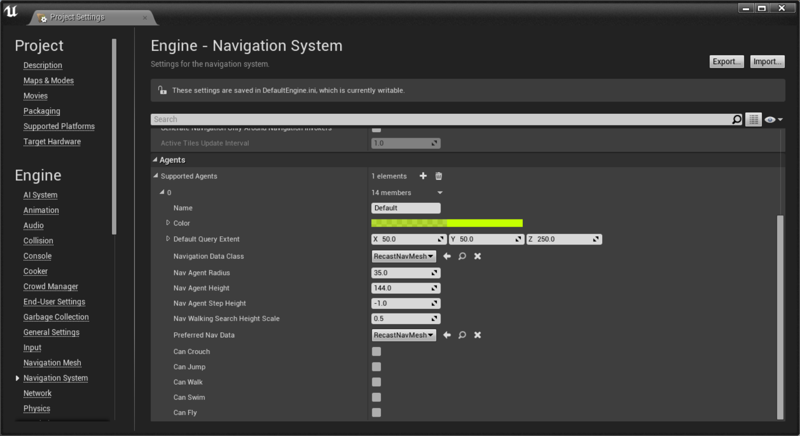

Replacing The Pathfinder
Overview
Pathfinding in UE4 is performed by NavMesh. While NavMesh is extremely versatile, you might be better off writing your own pathfinder tailored to the type of environment in your game (for instance, A* in a tile-based game). Thankfully it's really simple to slot in a new pathfinder - and your AIControllers won't notice the difference!
The original source for this tutorial is here .
The NavMesh pathfinder is contained in a class called ARecastNavMesh, a subclass of ANavigationData. The magic happens in the FindPath function:
static FPathFindingResult FindPath(const FNavAgentProperties& AgentProperties, const FPathFindingQuery& Query);
What's perhaps a little odd is that FindPath isn't a virtual function, like you might expect - it's static. Comments in the code explain it’s for performance reasons: Epic are concerned that if a lot of agents call the pathfinder in the same frame the virtual call overhead will accumulate and take too long, so instead the function is declared static and stored in a function pointer: FindPathImplementation. Which means you need to manually set the function pointer in your new navigation class constructor.
Another effect of FindPath being static is that it has no 'this', but thankfully a pointer to this is passed in Query.NavData so we can just use that.
FindPath is expected to return an FPathFindingResult struct, which just binds a success/failure enum with an FNavigationPath (which will contain the path, if successful). FindPath may need to construct a new FNavigationPath or it might be asked to reuse an existing one (if Query.PathInstanceToFill is valid).
All the above makes much more sense with an example!
ACustomNavigationData::ACustomNavigationData()
{
FindPathImplementation = FindPath;
}
FPathFindingResult ACustomNavigationData::FindPath(const FNavAgentProperties& AgentProperties, const FPathFindingQuery& Query)
{
// wrangle a 'this' of the correct type
const ANavigationData* Self = Query.NavData.Get();
const ACustomNavigationData* Custom = dynamic_cast<const ACustomNavigationData*>(Self);
check(Custom != nullptr);
if (Custom == nullptr)
{
return ENavigationQueryResult::Error;
}
FPathFindingResult Result(ENavigationQueryResult::Error);
// create a new path if we need to, or reuse an existing one
Result.Path = Query.PathInstanceToFill.IsValid() ? Query.PathInstanceToFill : Self->CreatePathInstance<FNavigationPath>(Query);
FNavigationPath* NavPath = Result.Path.Get();
if (NavPath != nullptr)
{
if ((Query.StartLocation - Query.EndLocation).IsNearlyZero())
{
Result.Path->GetPathPoints().Reset();
Result.Path->GetPathPoints().Add(FNavPathPoint(Query.EndLocation));
Result.Result = ENavigationQueryResult::Success;
}
else if (Query.QueryFilter.IsValid())
{
// run your pathfinding algorithm from Query.StartLocation to Query.EndLocation here,
// adding each point on the path to NavPath->GetPathPoints()
// the path must contain at least 2 points that aren't the start location
// if your algorithm can only find a partial path call NavPath->SetIsPartial(true)
// and remember to check if Query.bAllowPartialPaths is set
// if it isn't, you should return ENavigationQueryResult::Fail
// and finally, remember to call this!
NavPath->MarkReady();
Result.Result = ENavigationQueryResult::Success;
}
}
return Result;
}
Using the new pathfinder
To tell AI agents to use your new pathfinder instead of NavMesh, edit your project settings. Go to Engine/Navigation System and open the Supported Agents list (in a new project it will be empty). Add a new element, and change its Navigation Data Class to the one we just created.

If you add a NavMesh bounds to your map now, you'll notice an instance of your new pathfinder class is automatically added to the outliner. Any calls to MoveToLocation (in C++ or blueprint) will now use your pathfinder instead of NavMesh!